Source: Dr. Amir workshop — Med workshop 2 - 2026 / CLASS 3 OPHTHALMOLOGY (Aug 2026 drop) · Specialty: ophthalmology
An eye complaint that is also a neurological problem. This AMC-handbook-derived case presents transient vision loss with a now-normal visual acuity - a transient monocular visual loss - in the setting of a transient ischaemic attack (TIA). The patient (Gary) reports this is the third time he has lost his vision; on the last occasion his wife was driving him to hospital and the vision returned en route. He is haemodynamically stable.
Transient vision loss:
Permanent / other:
Open-ended question, then acknowledge the concern and signpost history, examination, diagnosis and management.
Timing: onset, duration of each episode, on/off vs constant, and whether he is now fully recovered (he is).
Pattern of the vision loss: blurred vs total blackout; whole vision or part; one eye or both (here: one eye, total loss); triggers; and that it has occurred three times.
TIA/stroke - neurological deficit: weakness, numbness, speech problems, gait problems (he reports transient slurred speech that recovered). Because stroke/TIA is a cardiovascular event, screen cardiovascular risk factors: family history of heart attack/stroke, and personal history of high blood sugar, blood pressure or lipids.
Brain tumour: headache, weight loss, early-morning vomiting.
Giant cell (temporal) arteritis: headache (if present, ask about scalp tenderness, jaw claudication on chewing); polymyalgia symptoms (shoulder/hip girdle pain).
Trauma: head injury or falls; anticoagulant/antiplatelet use (especially in older patients).
Eye causes: ocular pain (if present, a different differential list), redness, discharge, photophobia, flashes/floaters. For optic neuritis, ask about difficulty seeing or recognising colours (colour desaturation is an early feature). For retinal detachment, ask about sudden loss and a curtain descending across the vision.
General: level of consciousness, rashes, ptosis. Vitals: blood pressure, pulse rate, respiratory rate, temperature.
Two key points a senior will ask about in a TIA: pulse rhythm (atrial fibrillation as an embolic source) and carotid bruits (carotid stenosis). Hence the ED work-up includes carotid Doppler, an ECG/echocardiogram to assess for AF and cardiac source, and CT brain.
Neurological examination: cranial nerves (normal), fundoscopy, and upper- and lower-limb examination. Inspect the eye (redness, discharge, pupils); assume visual acuity, pupil reactions and eye movements are covered by the cranial-nerve examination. Perform a brief cardiovascular examination (S1/S2, murmurs, added sounds) as TIA is a cardiovascular event.
Previously the examiner handed over a hypertensive-retinopathy photograph. Features: AV nipping/nicking (arteriovenous crossing changes narrowing the vessel), silver/copper wiring (shiny sclerosed arterioles), and papilloedema (blurred optic-disc margins with a raised, three-dimensional swollen disc). Note that hypertensive retinopathy itself is NOT a cause of transient vision loss.
Diagnosis: transient ischaemic attack (do not use the bare term 'TIA' with the patient; explain it as a 'mini stroke'). Explain that the blood supply to part of the brain/eye was interrupted briefly. Reasons: transient vision loss with transient speech disturbance and other neurological deficit that recovered; cardiovascular risk factors (hypertension/diabetes); a normal current eye and neurological examination; and an extra sound (bruit) over the neck vessels.
Other transient differentials discussed: giant cell arteritis (no scalp tenderness or shoulder pain here), brain tumour (no headache), intracranial haemorrhage (no trauma/falls), retinal detachment (usually permanent), CRAO and CRVO.
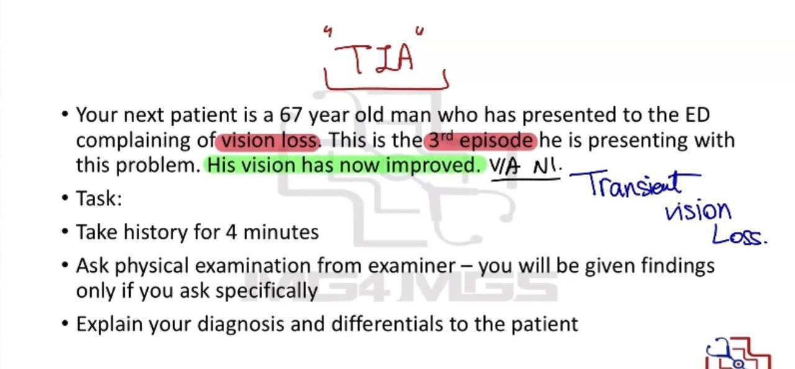
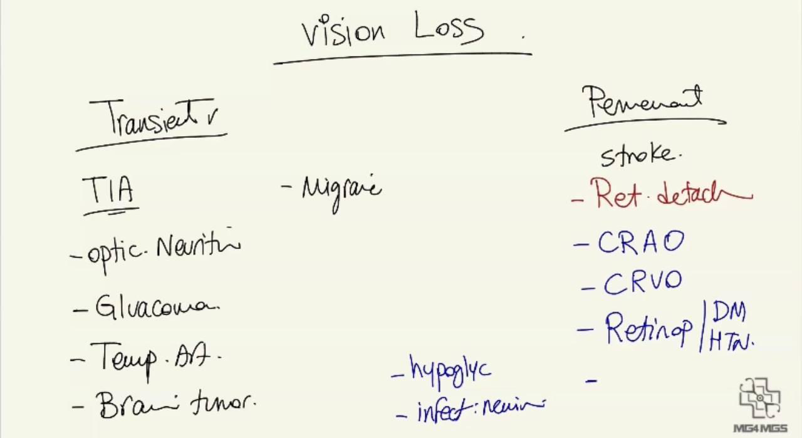
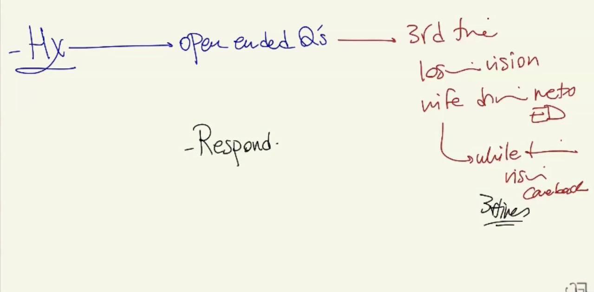
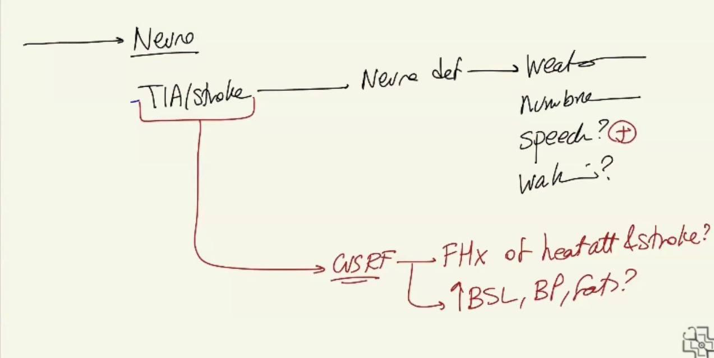
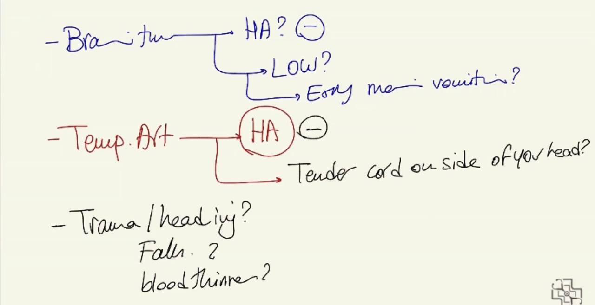
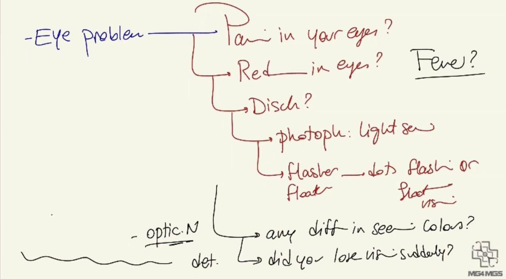
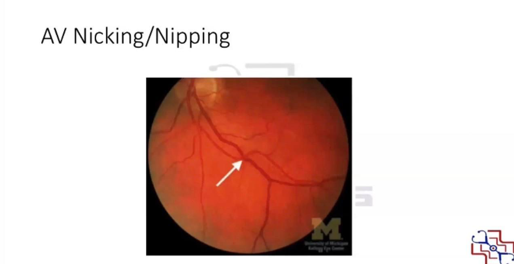
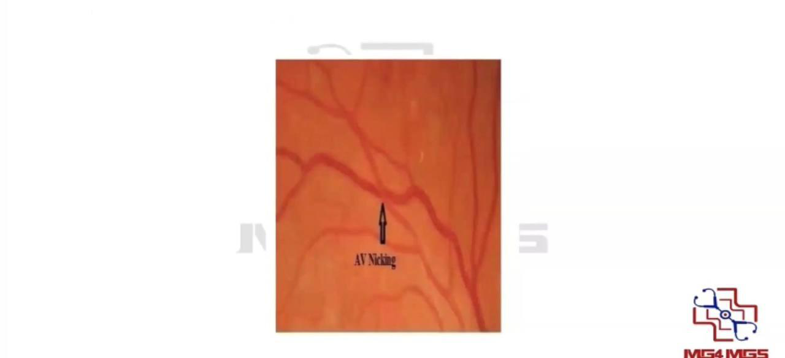
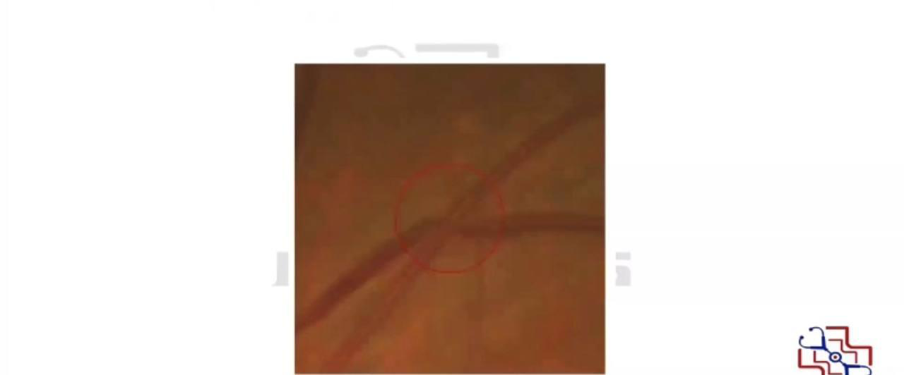
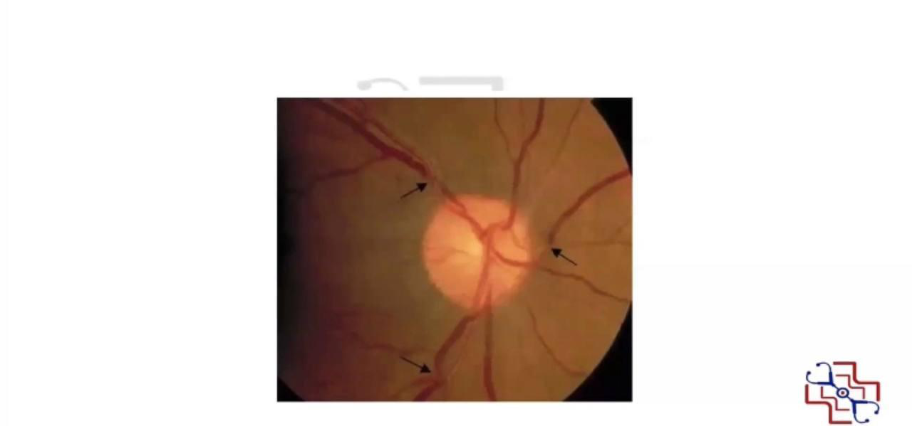
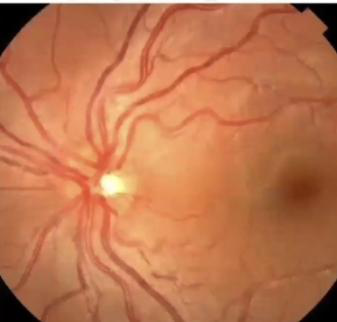
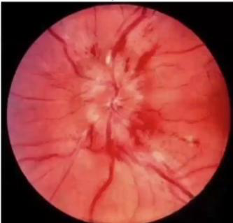
Reviewed by: physical-examination-expert (Australian clinical educator, ophthalmology focus) · fact-checked against the irStudy medical textbook RAG index.